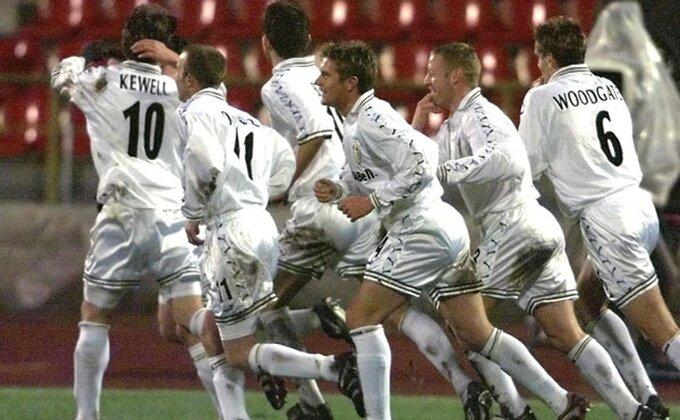

Kada se pogleda skor između Njukasla i Lidsa, navijači „Svraka“ imaju razlog za smešak, oni su do meča u decembru kada su primili pet golova posle jedne kontrovezne odluke Marka Klatenburga u ovom veku samo jednom izgubili od rivala sa severa.
Doduše retko su igrali jer je Lids ispao iz PL, alu u Čempionšipu je Dvajt Gejl doneo pobedu crno-belima, a timovi su igrali i u Liga kupu, 2013. Papis Sise i Joan Gufran su bili prevaga u korist Njukasla. Njihovom menadžeru Stivu Brusu ne treba da pričate šta je Lids, kao igrao vodio je mitske bitke za Vilkinsonovom ekipom koja je godinu pre PL imala u svojim redovima Erika Kantonu i osvojila titulu.
Narednog leta Ferguson je „Vilku“ oteo Francuza, pa su i Brus i Geri Palister, štoperi „Đavola“ odahnuli.

Kada se sve sabere Njukasl ima pobedu više, izgubio je prvi meč koji su igrali 1924. godine, a šezdesetih je Lids imao seriju od 15 mečeva bez poraza. Kasnije su se stvari promenile, ali gde je koren neprijateljstva?
Jasno da je Sanderlend najveći rival „Svraka“, no kada su sudari sa Lidsom u pitanju, geografski faktor nije razlog.
Naime, sedamdesetih je moćni Lids sa Donijem Rivijem svojom ciničnom igrom stekao mnogo neprijatelja, pobeđivali su i nikome nisu bili simpatični, a nekoliko mečeva sa Njukaslom se pretvorilo u pravu tuču, U drugoj polovini devedesetih, oba tima su bila jak, a jedan od magičnih mečeva je odigran u decembru 2001. Godine na „Eland Roudu“ kada je posle velikog preokreta gosto odneo bodove.
(AMA)